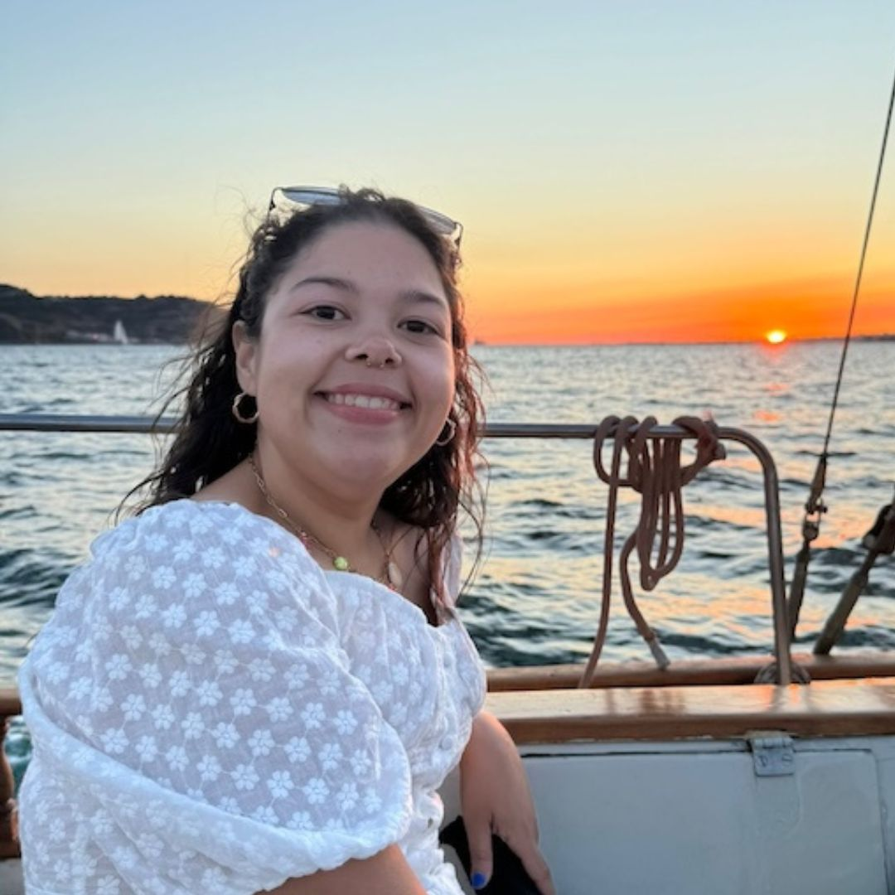
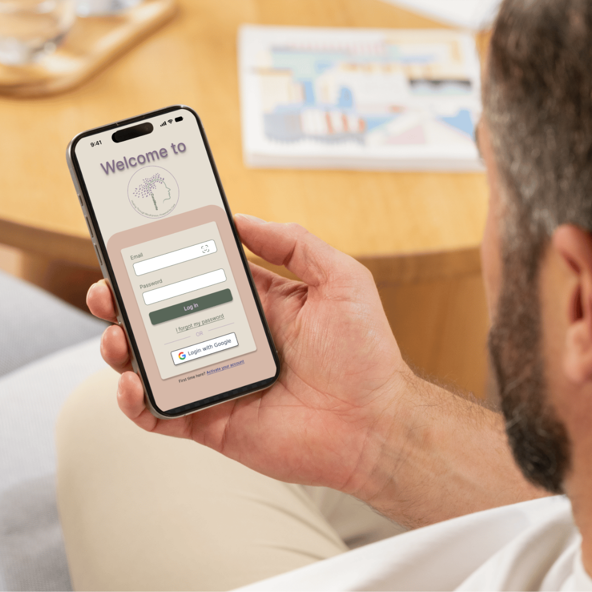
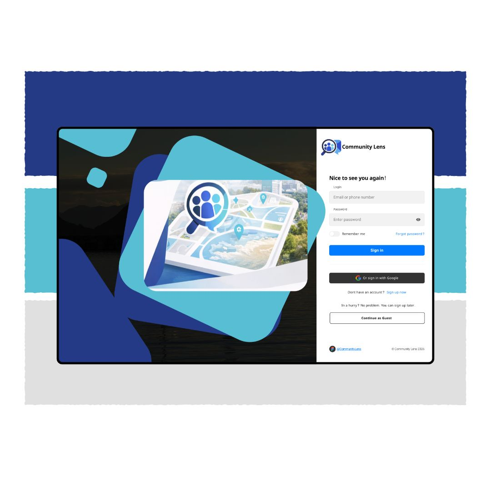
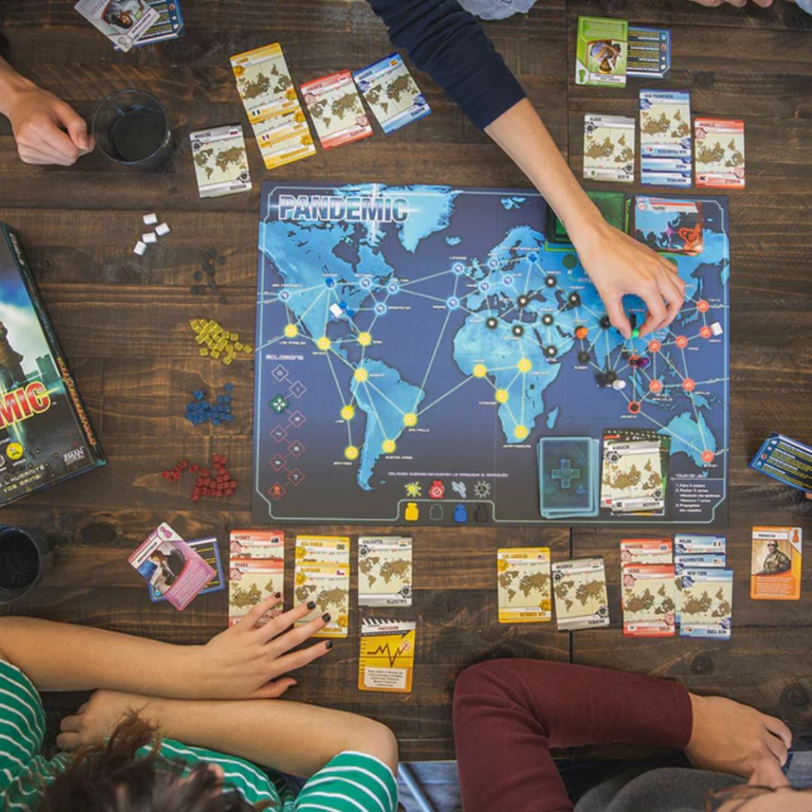

I design accessible, research-driven digital experiences that translate human behavior into thoughtful, scalable solutions.
Learn More About Me

— Jakob Nielsen
Accessibility is not an afterthought in my process. I design with diverse user needs in mind from the beginning, creating experiences that are inclusive, intuitive, and usable across a wide range of abilities.
Great design evolves through testing and refinement. I move from sketches to prototypes to polished designs, using feedback at each stage to continuously improve usability and impact.
Every design decision is informed by evidence. From usability testing and interviews to heuristic evaluations, I rely on research to guide choices and create solutions that are intuitive, accessible, and effective.

Accessibility-focused platform helping users evaluate public spaces.
Read Case Study
Cooperative board games as tools for workplace team training.
Read Case Study